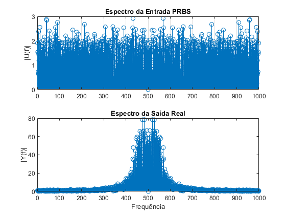
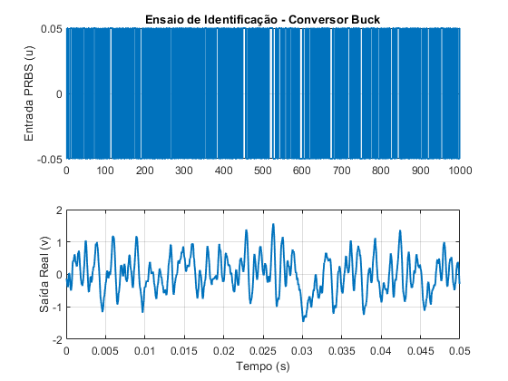
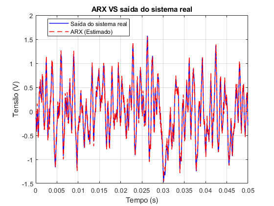
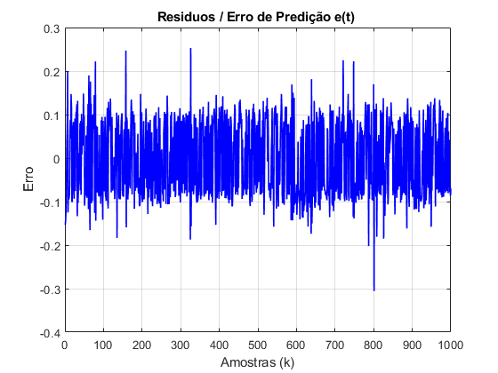
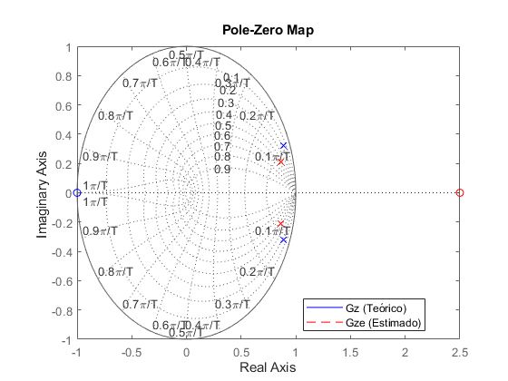

Contents
clear, clc, close all %Importação dos dados de saída e entrada a partir do CSV dados_csv = readmatrix('Dadosensaio_prbs50us.csv'); %Remoção eventuais linhas vazias/NaN no final do arquivo dados_csv = dados_csv(~isnan(dados_csv(:,1)), :); Nd = 500; Ts = 5.0e-5; %Parametros Fs = 20000; d = 0.3; Vs = 30; C = 0.000041666667; L = 0.000470; R = 10.0; num = Vs/(C*L); den = [1,1/(C*R) , 1/(C*L)]; Gs = tf(num,den); %(Tempo, PRBS e Saída) t = dados_csv(1:end-Nd, 1)'; u = dados_csv(Nd:end-1, 2)'; v = dados_csv(Nd:end-1, 3)';
mu_u = mean(u); mu_v = mean(v); u = u - mu_u; v = v - mu_v; y = transpose(v);
%Espectros: figure(1) U = fft(u); Y = fft(y); MagU = fftshift(abs(U)); MagY = fftshift(abs(Y)); subplot(211) stem(MagU(2:end)) grid on; title('Espectro da Entrada PRBS'); ylabel('|U(f)|'); subplot(212) stem(MagY(1:end)); title('Espectro da Saída Real'); ylabel('|Y(f)|'); xlabel('Frequência'); exportgraphics(figure(1), 'Espectros.png', 'Resolution', 300);

Relação gráfica de saída e entrada
figure(2); clf; subplot(2,1,1); stairs(1:length(u), u, 'LineWidth', 1.4); ylabel('Entrada PRBS (u)'); title('Ensaio de Identificação - Conversor Buck'); grid on; subplot(2,1,2); plot(t(1:length(v)), v, 'LineWidth', 1.4); ylabel('Saída Real (v)'); xlabel('Tempo (s)'); grid on; exportgraphics(figure(2), 'Entradasaida.png', 'Resolution', 300);

Construção matricial - regressores
Ns = numel(t); M = zeros(Ns-3,4); for n = 3:Ns phi = [y(n-1), y(n-2), u(n-1), u(n-2)]; M(n, :) = phi; end theta = M\y; a1 = theta(1); a2 = theta(2); b1 = theta(3); b2 = theta(4); ys = zeros(size(y)); ys(1:2) = y(1:2); yp = M * theta;
Comparação ARX VS saída do sistema.
figure(3) plot(t, y, 'b', 'LineWidth', 1.2) hold on plot(t, yp, 'r--', 'LineWidth', 1.2) legend('Saída do sistema real', 'ARX (Estimado)', 'Location', 'best'); hold off grid on title('ARX VS saída do sistema real'); xlabel('Tempo (s)'); ylabel('Tensão (V)'); exportgraphics(figure(3), 'comparacao_arxREAL.png', 'Resolution', 300);

Modelo ARX - Discreto
fprintf('===================Modelo matematico discretizado================') Gz = c2d(Gs, Ts ,'matched') fprintf('==================polos e zeros Gz===============================') pole(Gz) zero(Gz) Be = [0, b1, b2]; Ae = [1, -a1, -a2]; fprintf('===================Modelo ARX discreto===========================') Gze = tf(Be, Ae, Ts) fprintf('==================polos e zeros Gze==============================') pole(Gze) zero(Gze)
===================Modelo matematico discretizado================
Gz =
1.785 z + 1.785
----------------------
z^2 - 1.768 z + 0.8869
Sample time: 5e-05 seconds
Discrete-time transfer function.
==================polos e zeros Gz===============================
ans =
0.8839 + 0.3249i
0.8839 - 0.3249i
ans =
-1
===================Modelo ARX discreto===========================
Gze =
0.01594 z - 0.03983
----------------------
z^2 - 1.729 z + 0.7917
Sample time: 5e-05 seconds
Discrete-time transfer function.
==================polos e zeros Gze==============================
ans =
0.8646 + 0.2100i
0.8646 - 0.2100i
ans =
2.4997
Ajuste
fprintf('=====================Ajuste R2===================================')
R2 = 1 - sum((y - yp).^2)/sum((y - mean(y)).^2)
=====================Ajuste R2===================================
R2 =
0.9741
e = y - yp; % Cálculo do erro de predição/resíduo fprintf('=======================media do erro=============================') mean(e) figure(4); % 1. Inspeção Visual do Erro no Tempo plot(e, 'b', 'LineWidth', 1.2); grid on; title('Residuos / Erro de Predição e(t) '); xlabel('Amostras (k)'); ylabel('Erro'); exportgraphics(figure(4), 'Residuo.png', 'Resolution', 300);
=======================media do erro============================= ans = -4.9658e-04

figure(5) pzmap(Gz, 'b') grid on hold on pzmap(Gze, 'r--') legend('Gz (Teórico)', 'Gze (Estimado)', 'Location', 'best'); hold off exportgraphics(figure(5), 'poloszeros.png', 'Resolution', 300);
